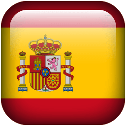
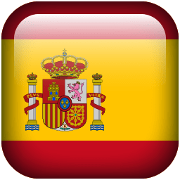

Nowe inicjatywy na rzecz ochrony środowiska
Wprowadzamy nowe projekty mające na celu redukcję odpadów i oszczędność energii.
Zalesianie miast
Cel: Zwiększenie powierzchni zieleni miejskiej i poprawa jakości powietrza.
Działania: Sadzenie drzew w parkach, przy ulicach oraz na terenach rekreacyjnych.
Osiągnięcia: Posadzono 5000 drzew w 2023 roku, co przyczyniło się do zmniejszenia poziomu zanieczyszczeń o 10%.
Program edukacyjny dla szkół
Cel: Edukacja dzieci i młodzieży na temat ochrony środowiska i zrównoważonego rozwoju.
Działania: Organizacja warsztatów, prezentacji i konkursów ekologicznych.
Osiągnięcia: Program objął 50 szkół i 10 000 uczniów, zwiększając świadomość ekologiczną wśród młodzieży.
Kampania redukcji plastiku
Cel: Zmniejszenie ilości plastikowych odpadów.
Działania: Promowanie alternatyw dla plastiku, takie jak torby wielokrotnego użytku i biodegradowalne opakowania.
Osiągnięcia: Kampania doprowadziła do zmniejszenia użycia plastikowych toreb o 30% w ciągu roku.
Ochrona wód
Cel: Ochrona zasobów wodnych i poprawa jakości wód.
Działania: Instalacja filtrów w fabrykach, edukacja mieszkańców na temat oszczędzania wody.
Osiągnięcia: Zmniejszenie ilości zanieczyszczeń w lokalnych rzekach o 20%.
Promowanie transportu publicznego
Cel: Redukcja emisji CO2 poprzez zwiększenie korzystania z transportu publicznego.
Działania: Wprowadzenie zniżek na bilety, rozwój sieci transportu miejskiego.
Osiągnięcia: Wzrost liczby pasażerów o 15%, co przyczyniło się do zmniejszenia emisji CO2 o 5%.